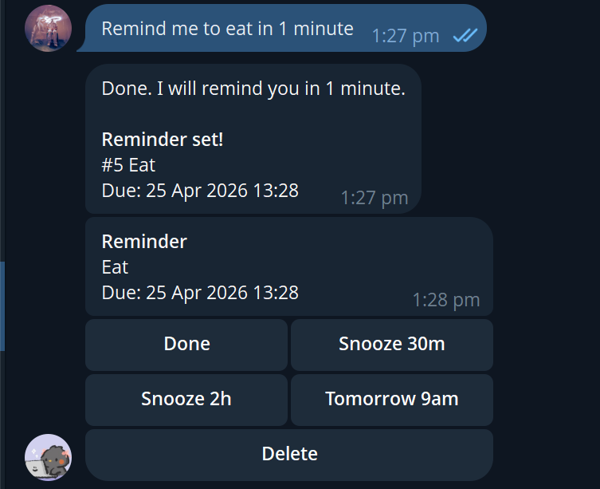

Natural-language parsing
Handles reminder phrasing, task commands, snoozing, summaries, and clarification fallback.
AI automation bot
A TypeScript Telegram assistant that turns natural-language messages into scheduled reminders, follow-up tasks, and quick task actions.
Due tomorrow, 9:00 AM. Actions: Done, Snooze, Delete.
Real Telegram test
This screenshot shows the bot doing the full loop: it accepted a natural-language reminder, confirmed the parsed task, fired the reminder, and exposed inline actions.

Handles reminder phrasing, task commands, snoozing, summaries, and clarification fallback.
Checks due reminders on an interval and sends Telegram messages with inline task actions.
Uses SQLite persistence, structured logging, environment validation, and Docker deployment files.